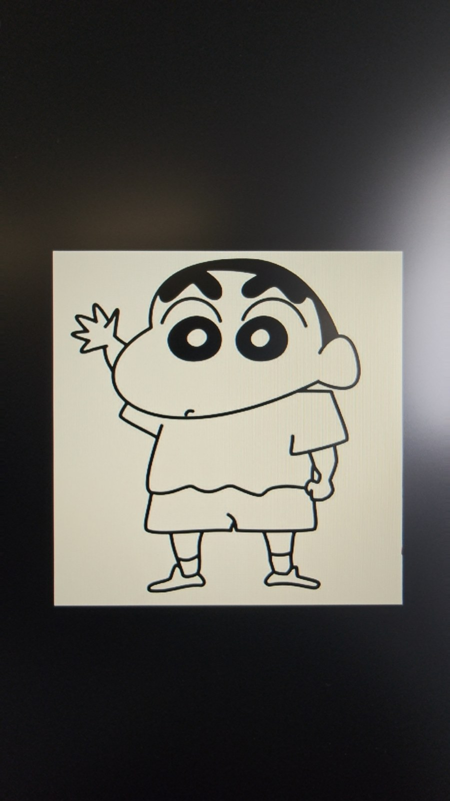
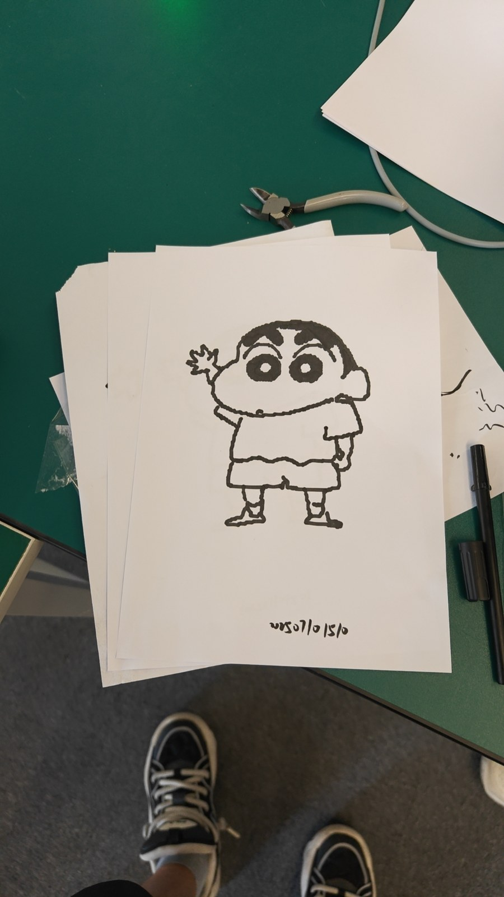
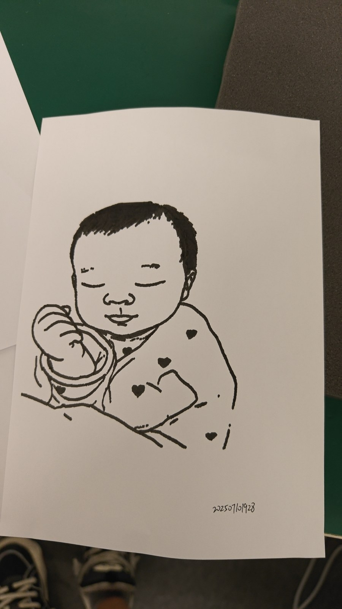

多模态图像生成与素描机器人系统
用户上传照片后，系统提取其中的人像，调用多模态图像生成模型将人像转为卡通线稿，再通过轨迹规划生成绘画路径，交由机械臂在纸上执行。同一流程先后适配 Franka 与大象 ultraArm P340，贯通图像生成、路径规划与真机绘画。
代表性效果
从输入照片生成卡通线稿，再将规划路径转化为纸上作品。
技术流程
- 人像提取：从用户提供的照片中提取人像，作为后续图像生成的输入。
- 图像生成：调用 OpenAI 图像生成 API，将人像转为适合机器人绘画的卡通线稿。
- 轨迹规划：将线稿转换为绘画路径，规划笔画轨迹与执行顺序。
- 真机执行：将规划路径适配至 Franka 或大象 ultraArm P340，完成纸上绘制。
实验与案例
图案绘制对照
以蜡笔小新图案对照输入图像与机械臂的实际绘制结果。


两种执行平台
在 Franka 上验证完整绘画流程后，将同一流程适配至大象 ultraArm P340，以降低硬件成本。
照片转人像绘画
小孩人像示例由照片经过人像提取、卡通化图像生成、轨迹规划与机械臂执行，最终形成下方纸上作品。
